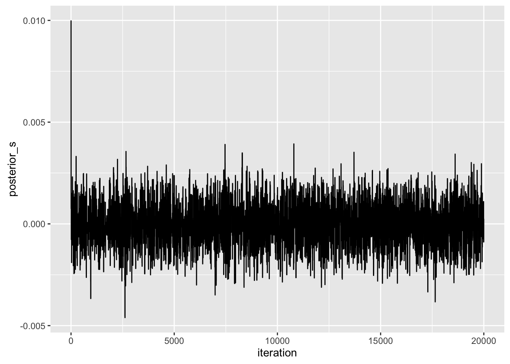
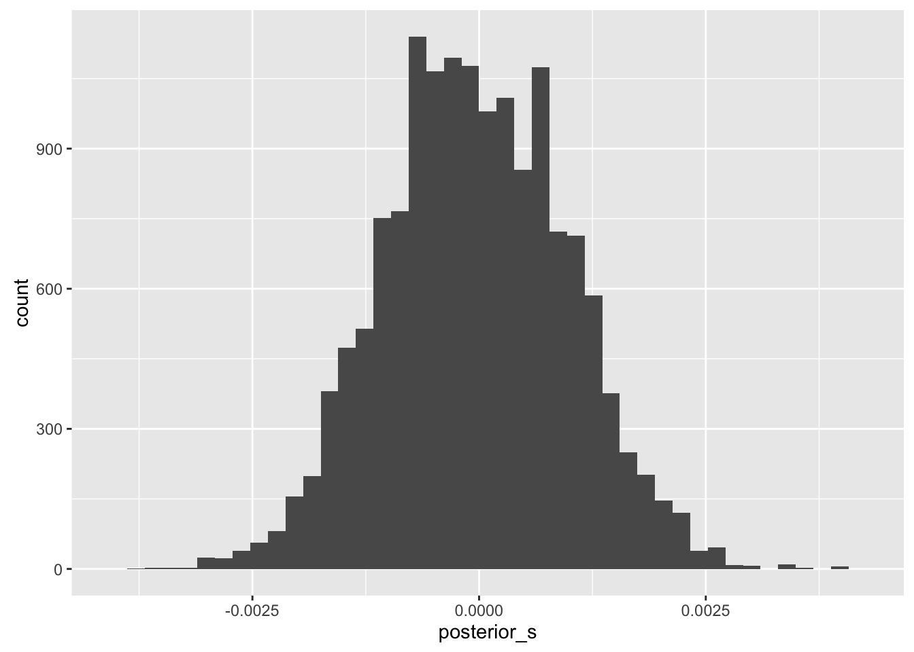
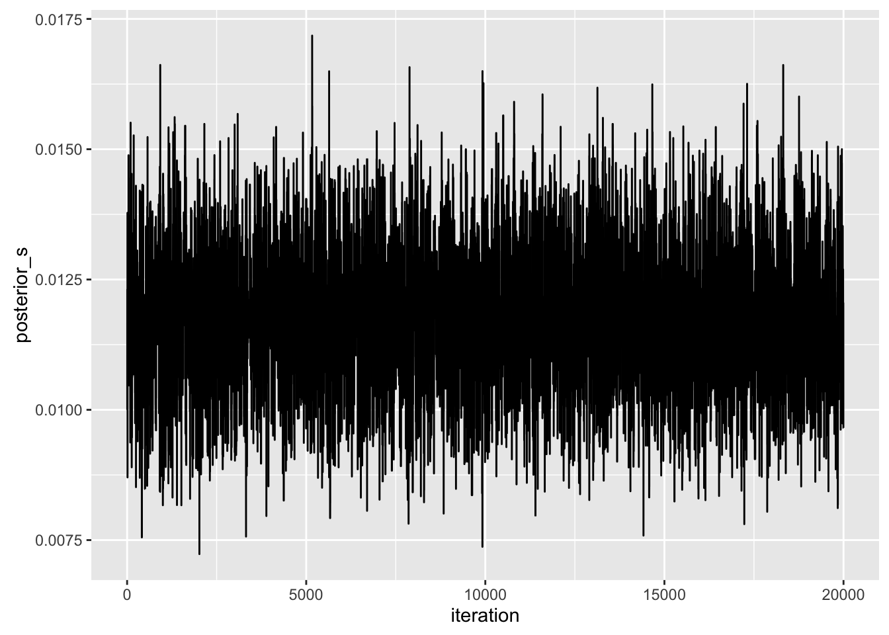
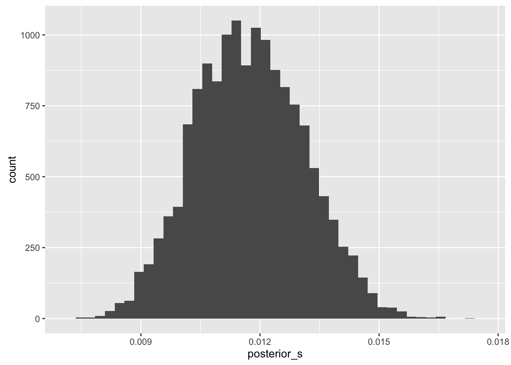

Last updated: 2016-03-08
Code version: 7b1e9b0984ab5817c9d8e2cf9db389943e2bb4df
A basic knowledge of:
Identifying regions of the genome that have been under selection is a very exciting and active area of research for current population geneticists. Recent developments in ancient DNA (aDNA) technologies allow for the observation of estimates of allele frequencies through time, the data structure in which the Wright-Fisher process is attempting to model. In the past tutorials we have focused on the most basic version of the Wright-Fisher model which is of pure drift alone. Natural selection is a evolutionary force that effects the probability that a particular allele will be sampled in the next generation thus effecting both the mean and variance we derived previously. Here I will outline an inference framework for estimating the strength of selection using approximations to the Wright-Fisher model that incorporate selection. Particularly we will take advantage of that fact that we observe samples from an allele frequency trajectory when we use allele count data from ancient populations sampled at multiple time points.
Let relative fitness \(w(.)\) of the three possible genotypes be \(w(aa) = 1\), \(w(Aa) = 1 + hs\) and \(w(AA) = 1 + s\) where \(s\) is the selection coefficient and \(h\) is the dominance parameter. To incorporate selection into the Wright-Fisher model we can modify our previous definition to:
\[X_{t} \mid X_{t-1} = x_{t-1} \sim Binomial(n = 2N, p = g(y_{t-1}))\]
where the allele frequency \(Y_t = \frac{X_t}{2N}\). Assuming \(s\) is small and there is no mutation or migration:
\[g(x) = x + sx(1-x)(h + (1 - 2h)x)\]
Because \(g(.)\) is a non-linear function of \(x\) the expected value of Wright-Fisher model with selection will be non-linear (from the binomial expectation). Thus to make similar approximations via moment-matching we will have to perform a few tricks. Following the previous tutorials we would ultimately like to have an expression for the mean and variance of the Wright Fisher model with selection conditional on a allele frequency in an ancestral population \(\tau\) generations ago:
\[\mu_t = E(Y_t \mid Y_{\tau})\] \[= E(E(Y_t \mid Y_{\tau}) \mid Y_{\tau})\] \[= E(g(Y_{t-1}) \mid Y_{\tau})\]
Recall our previous description of the delta method. Here to make the derivations slightly simpler we use a first order taylor series approximation in the delta method:
\[E(Y) \approx g(\mu_x)\] \[Var(Y) \approx Var(X)(g'(\mu_x))^2\]
we can write down an approximation for the above expectation:
\[\mu_t \approx \mu_{t-1} + s\mu_{t-1}(1-\mu_{t-1})(h + (1 - 2h)\mu_{t-1})\]
we can likewise solve for a similar approximation of the variance:
\[\sigma^2_t = E(Var(Y_t \mid Y_{t-1}) \mid Y_{\tau}) + Var(E(Y_t \mid Y_{t-1}) \mid Y_{\tau})\]
\[ = E(\frac{1}{2N}g(Y_{t-1})(1 - g(Y_{t-1}) \mid Y_{\tau}) + Var(g(Y_{t-1}) \mid Y_{\tau}) \]
\[\sigma^2_t \approx \frac{1}{2N} (g(\mu_{t-1})(1 - g(\mu_{t-1})) + (1 + s(2 - 3\mu_{t-1})\mu_{t-1})^2 \sigma^2_{t-1} \]
We can then use these moments for the normal approximation incorporating selection:
\[Y_t \mid Y_{\tau} = y_{\tau} \sim Normal(\mu_t, \sigma^2_t)\]
I implemented the above approach in C++ integrated with R using Rcpp. Here I simulate allele frequencies from the exact Wright-Fisher Model with selection and sample binomial allele counts from the population frequencies to create an observation sequence through time. I then use the MCMC approach described above to draw samples from the posterior distribution of \(s\). Of the course the below simulations only show a few examples: future exploration is absolutely necessary.
For a sanity check our inference approach should not infer selection as we are setting \(s = 0\) for the simulated data.
library(Rcpp)
library(ggplot2)
library(dplyr)
source("../../R/simulation.R")
sourceCpp("../../src/mcmc.cpp")
# starting allele frequency
x0 <- .3
# selection coefficent
s <- 0.0
# dominence parameter
h <- .5
# effecitive population size
N <- 5000
# number of samples per time point (assuming this is large for now)
n_chrs <- rep(1000, 20)
# time points
gens <- seq(1, 200, 10)
df <- get_wf_samples(x0, N, s, n_chrs, gens)
O <- as.matrix(df)
print(O) alleleCount nChr gen
[1,] 278 1000 1
[2,] 285 1000 11
[3,] 286 1000 21
[4,] 280 1000 31
[5,] 251 1000 41
[6,] 246 1000 51
[7,] 263 1000 61
[8,] 271 1000 71
[9,] 288 1000 81
[10,] 277 1000 91
[11,] 277 1000 101
[12,] 239 1000 111
[13,] 271 1000 121
[14,] 274 1000 131
[15,] 278 1000 141
[16,] 264 1000 151
[17,] 257 1000 161
[18,] 253 1000 171
[19,] 248 1000 181
[20,] 241 1000 191# Params for hmm/mcmc
n_obs <- nrow(O)
states <- seq(0.0, 1.0, .025)
s_0 <- 0.01
prop_sd <- .005
n_iter <- 20000
# run mcmc!
posterior_samples <- mcmc(O, states, s_0, h, N, prop_sd, n_iter)
# trace plot
qplot(1:length(posterior_samples), posterior_samples, geom="line", xlab = "iteration", ylab = "posterior_s")
# histogram of posterior, removing burn in
qplot(posterior_samples[5000:length(posterior_samples)], xlab = "posterior_s", bins = 40)
as we can see the posterior of \(s\) inferred from this simulation looks reasonable.
Here we are setting \(s = .01\).
# starting allele frequency
x0 <- .3
# selection coefficent
s <- 0.01
# dominence parameter
h <- .5
# effecitive population size
N <- 5000
# number of samples per time point (assuming this is large for now)
n_chrs <- rep(1000, 20)
# time points
gens <- seq(1, 200, 10)
df <- get_wf_samples(x0, N, s, n_chrs, gens)
O <- as.matrix(df)
print(O) alleleCount nChr gen
[1,] 324 1000 1
[2,] 314 1000 11
[3,] 324 1000 21
[4,] 309 1000 31
[5,] 358 1000 41
[6,] 365 1000 51
[7,] 367 1000 61
[8,] 371 1000 71
[9,] 382 1000 81
[10,] 405 1000 91
[11,] 412 1000 101
[12,] 449 1000 111
[13,] 454 1000 121
[14,] 496 1000 131
[15,] 512 1000 141
[16,] 514 1000 151
[17,] 515 1000 161
[18,] 569 1000 171
[19,] 543 1000 181
[20,] 563 1000 191# Params for hmm/mcmc
n_obs <- nrow(O)
states <- seq(0.0, 1.0, .025)
s_0 <- 0.01
prop_sd <- .005
n_iter <- 20000
# run mcmc!
posterior_samples <- mcmc(O, states, s_0, h, N, prop_sd, n_iter)
# trace plot
qplot(1:length(posterior_samples), posterior_samples, geom="line", xlab = "iteration", ylab = "posterior_s")
# histogram of posterior, removing burn in
qplot(posterior_samples[5000:length(posterior_samples)], xlab = "posterior_s", bins = 40)
The inferred posterior mean seems to be close to what I simulated. The simulations are run under very idealized conditions thus the possible factors that could break my inference procedure are:
But as a first step towards estimating selection coefficients from time-series data this seems to work reasonably well!
sessionInfo()R version 3.2.3 (2015-12-10)
Platform: x86_64-apple-darwin15.2.0 (64-bit)
Running under: OS X 10.11 (El Capitan)
locale:
[1] en_US.UTF-8/en_US.UTF-8/en_US.UTF-8/C/en_US.UTF-8/en_US.UTF-8
attached base packages:
[1] stats graphics grDevices utils datasets methods base
other attached packages:
[1] knitr_1.12.18
loaded via a namespace (and not attached):
[1] magrittr_1.5 formatR_1.3 tools_3.2.3 htmltools_0.3
[5] yaml_2.1.13 stringi_1.0-1 rmarkdown_0.9.2 stringr_1.0.0
[9] digest_0.6.9 evaluate_0.8.3